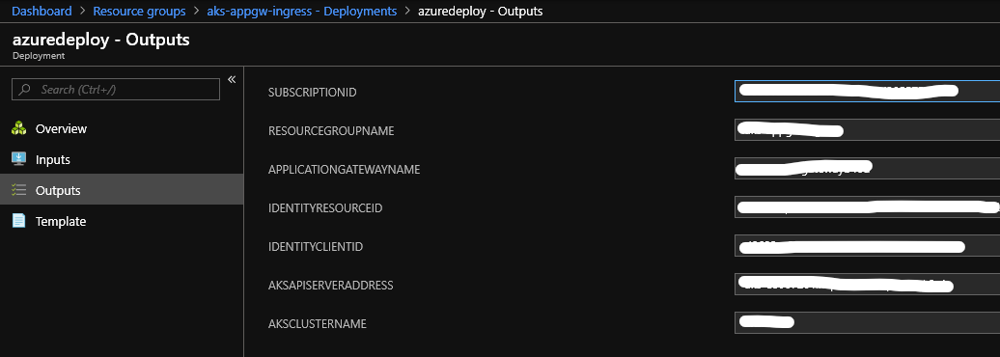

Greenfield Deployment
Table of Contents
Deploying the infrastructure on Azure
To create the pre-requisite Azure resources, you can use the following template. It creates:
- Azure Virtual Network with 2 subnets.
- Azure Application Gateway v2.
- Azure Kubernetes Service cluster with required permission to deploy nodes in the Virtual Network. You have an option to deploy RBAC enabled AKS cluster
- User Assigned Identity to initialize the aad-pod-identity service and ingress controller.
- Set required RBACs.
Prerequisites
The steps below require the following software to be installed on your workstation:
az- Azure CLI: installation instructionskubectl- Kubernetes command-line tool: installation instructionshelm- tool for managing pre-configured Kubernetes resources: installation instructions
Steps
-
Create an Azure Active Directory (Azure AD) service principal object. This object will be assigned to the AKS cluster in the template. As a result of executing the commands below you will have an
appId,password, andobjectIdvalues. Execute the following commands:az ad sp create-for-rbac --skip-assignment- creates an AD service principal object. Record and securely store the values for theappIdandpasswordkeys from the JSON output of this command. (Read more about RBAC)az ad sp show --id <appId> --query "objectId"- retrieves theobjectIdof the newly created service principal. Replace<appId>with the value for theappIdkey from the JSON output of the previous command. Record theobjectIdvalue returned.
-
After creating the service principal in the step above, click to create a custom template deployment. Provide the appId for servicePrincipalClientId, password and objectId in the parameters. Note: For deploying an RBAC enabled cluster, set
aksEnabledRBACparameter totrue.

The templated deployment will create: - Managed Identity - Virtual Network - Public IP Address - Application Gateway - Azure Kubernetes Service
After the deployment completes, you will find the parameters needed for the steps below in the deployment outputs window. (Navigate to the deployment's output by following this path in the Azure portal:
Home 🠆 *resource group* 🠆 Deployments 🠆 *new deployment* 🠆 Outputs)Example: 
Setting up Application Gateway Ingress Controller on AKS
Overview
With the instructions in the previous section we created and configured a new Azure Kubernetes Service (AKS) cluster. We are now ready to deploy to our new Kubernetes infrastructure. The instructions below will guide us through the proccess of installing the following 2 components on our new AKS:
- Azure Active Directory Pod Identity - Provides token-based access to the Azure Resource Manager (ARM) via user-assigned identity. Adding this system will result in the installation of the following within your AKS cluster:
- Custom Kubernetes resource definitions:
AzureIdentity,AzureAssignedIdentity,AzureIdentityBinding - Managed Identity Controller (MIC) component
- Node Managed Identity (NMI) component
- Application Gateway Ingress Controller - This is the controller which monitors ingress-related events and actively keeps your Azure Application Gateway installation in sync with the changes within the AKS cluster.
Steps:
-
To configure kubectl to connect to the deployed Azure Kubernetes Cluster, follow these instructions.
-
Add aad pod identity service to the cluster using the following command. This service will be used by the ingress controller. You can refer aad-pod-identity for more information.
- RBAC disabled AKS cluster
kubectl create -f https://raw.githubusercontent.com/Azure/aad-pod-identity/master/deploy/infra/deployment.yaml- RBAC enabled AKS cluster
kubectl create -f https://raw.githubusercontent.com/Azure/aad-pod-identity/master/deploy/infra/deployment-rbac.yaml -
Install Helm and run the following to add
application-gateway-kubernetes-ingresshelm package:- RBAC disabled AKS cluster
helm init helm repo add application-gateway-kubernetes-ingress https://azure.github.io/application-gateway-kubernetes-ingress/helm/ helm repo update- RBAC enabled AKS cluster
kubectl create serviceaccount --namespace kube-system tiller-sa kubectl create clusterrolebinding tiller-cluster-rule --clusterrole=cluster-admin --serviceaccount=kube-system:tiller-sa helm init --tiller-namespace kube-system --service-account tiller-sa helm repo add application-gateway-kubernetes-ingress https://azure.github.io/application-gateway-kubernetes-ingress/helm/ helm repo update -
Edit helm-config.yaml and fill in the values for
appgwandarmAuth# This file contains the essential configs for the ingress controller helm chart # Verbosity level of the App Gateway Ingress Controller verbosityLevel: 3 ################################################################################ # Specify which application gateway the ingress controller will manage # appgw: subscriptionId: <subscription-id> resourceGroup: <resourcegroup-name> name: <applicationgateway-name> ################################################################################ # Specify which kubernetes namespace the ingress controller will watch # Default value is "default" # Leaving this variable out or setting it to blank or empty string would # result in Ingress Controller observing all acessible namespaces. # # kubernetes: # watchNamespace: <namespace> ################################################################################ # Specify the authentication with Azure Resource Manager # # Two authentication methods are available: # - Option 1: AAD-Pod-Identity (https://github.com/Azure/aad-pod-identity) armAuth: type: aadPodIdentity identityResourceID: <identity-resource-id> identityClientID: <identity-client-id> ################################################################################ # Specify if the cluster is RBAC enabled or not rbac: enabled: false # true/false ################################################################################ # Specify aks cluster related information. THIS IS BEING DEPRECATED. aksClusterConfiguration: apiServerAddress: <aks-api-server-address>NOTE: The
<identity-resource-id>and<identity-client-id>are the properties of the Azure AD Identity you setup in the previous section. You can retrieve this information by running the following command:az identity show -g <resourcegroup> -n <identity-name>Where
<resourcegroup>is the resource group in which the top level AKS cluster object, Application Gateway and Managed Identify are deployed.Then execute the following to the install the Application Gateway ingress controller package.
helm install -f helm-config.yaml application-gateway-kubernetes-ingress/ingress-azure
Jump next to tutorials to understand how you can expose an AKS service over HTTP or HTTPS, to the internet, using an Azure Application Gateway.